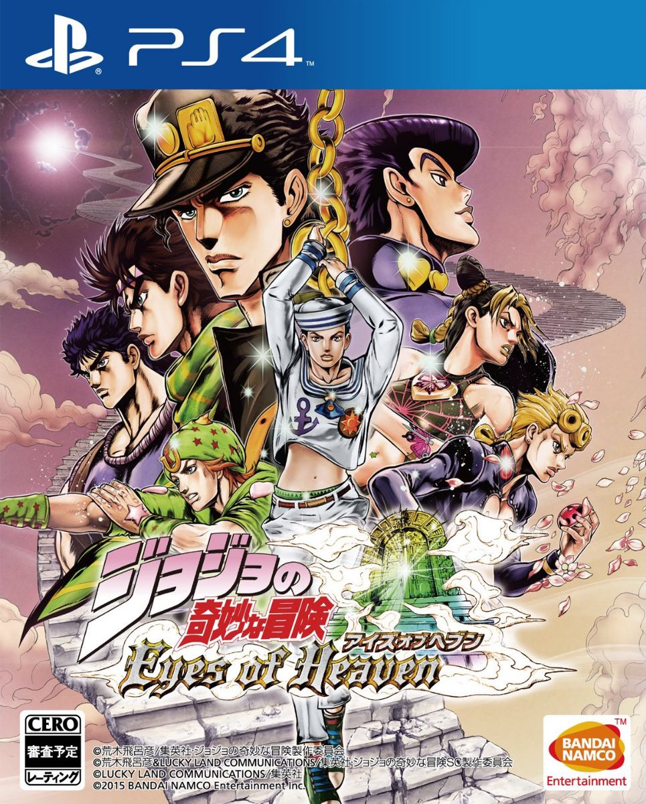

INFORMACIÓN DEL JUEGO
A la venta en 2020
Jojo's Bizarre Adventure: Eyes of Heaven es un beat'em up clásico, que nos ofrecerá mecánicas propias de los títulos de lucha "yo contra el barrio", y en el que combatiremos por parejas con más de cincuenta héroes y villanos de esta veterana serie, provenientes de todos sus arcos argumentales.
También es conocido como JoJo no Kimyo na Bouken: Eyes of Heaven.
Disponible para PS3 y PS4